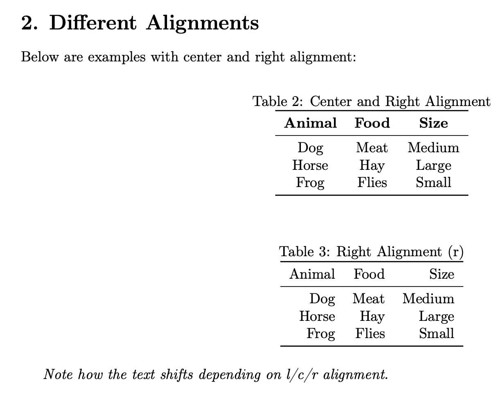
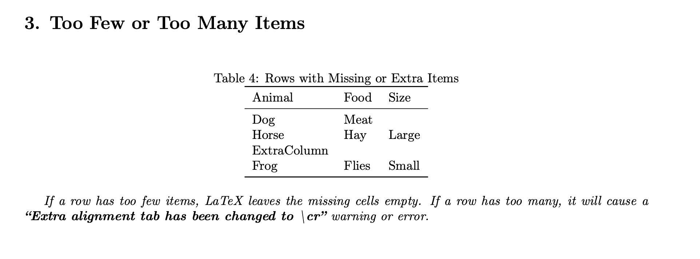
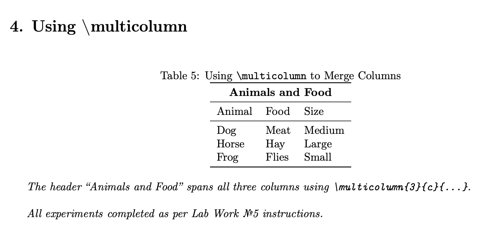

Practical Scientific Writing
Nadia El Fe
2025–2026
The purpose of this laboratory assignment is to learn and practice creating tables in LaTeX.
The experiment includes using different column alignments, understanding row item mismatches, and applying the \multicolumn command to span multiple columns.
l, c, and r alignment options.\multicolumn command to merge several columns.pdflatex (MacTeX 2025 distribution)A three-column table was created with the column specification {l l l}.
Result: all cells are left-aligned as expected.
Two additional tables were built with {c c c} and {r r r} specifications.
Result:
c alignment centered each cell’s content.r alignment right-justified all entries.
Rows with fewer or extra cells were tested.
Result:
Too few items: missing cells are left empty.
Too many items: LaTeX displayed a warning
(“Extra alignment tab has been changed to \cr”).

\multicolumnThe \multicolumn{3}{c}{Animals and Food} command successfully merged three columns into one centered heading.

All required experiments were performed successfully.
Tables compiled without critical errors, and the output verified expected alignment and merging behavior.
| Experiment | Description | Result |
|---|---|---|
| Alignment | Tested l, c, r columns |
Works correctly |
| Missing / Extra items | Checked behavior with uneven cells | As expected |
\multicolumn |
Spanned cells across columns | Works correctly |
The laboratory work confirmed the ability to design professional tables in LaTeX and understand alignment rules, spacing, and column-merging features.
This knowledge forms the foundation for producing clean, publication-ready scientific documents.
© 2025 Nadia Ezzakate — Practical Scientific Writing, Moscow